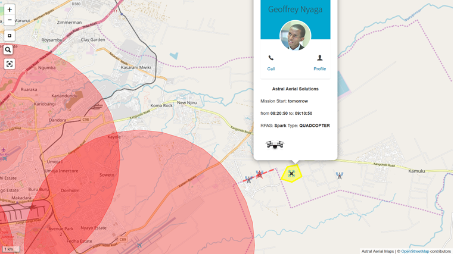
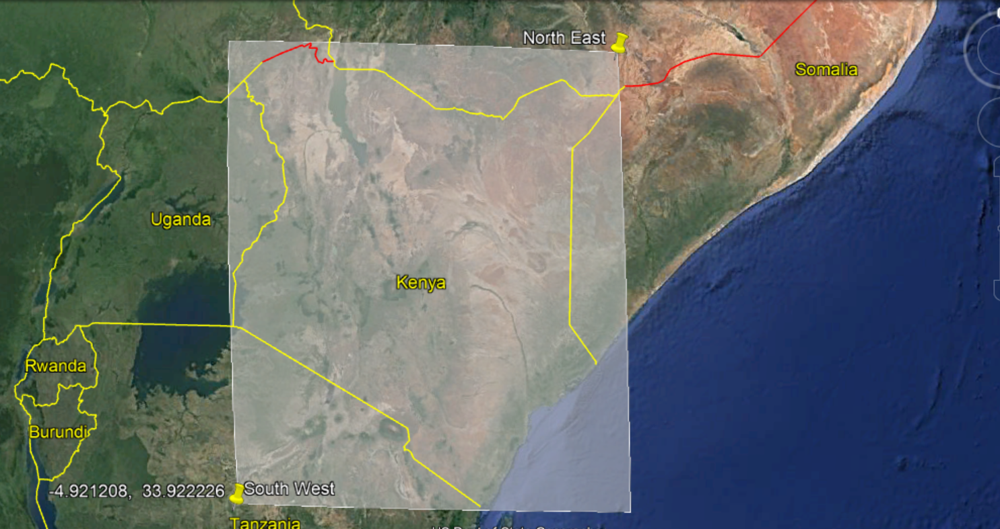

ANGA UTM
This is a LAANC (Low Altitude Authorization and Notification Capability) to UTM (UAV Traffic Management) implemetation for drones / UAS / RPAS. It includes drone Registrations, drone flight plans, drone Geofences and drone approvals
It is a PWA (Progressive Web App) purely done in Django/python

Overview
The software is a LAANC implementation. LAANC is Low Altitude Airspace Authorization and Notifications.
- Registration
- Flight Plans submission and Authorization.
- Geofences.
- NOTAM and Notifications
Full Documentation ↗️🔗
Install Instructions
The new version of the app works best on linux/MacOS environment. For windows installation, kindly check out the official Django documentation to install GEOS and GDAL libraries and how to configure them. Alternatively, I can recommend you install Windows Subsystem for Linux (WSL) and use the Ubuntu environment inorder to install the dependacies using the steps below
Steps
Clone the repo
git clone https://github.com/geoffreynyaga/ANGA-UTM.git
create a python virtualenvironment
virtualenv venv
activate the virtualenvironment
source venv/bin/activate
install python packages
pip install -r requirements.txt
install geojango Geospatial Libraries packages
sudo apt-get install binutils libproj-dev gdal-bin
-
create a postgres database on called "anga_utm" or equivalently give it a custom name and make sure to change the value in the local.py settings file -
run migrations
python manage.py migrate
create superuser
python manage.py createsuperuser
-
log in to the admin and under "Authentication and Authorization" create a group called CAA and give the group the relevant permissions that Civil Aviation requires e.g. changing reserved airspaces, adding/changing NOTAMs -
One more thing... By default, the application is country-specific, and the default country is Kenya, but this constraint can be removed.
If you log in the app, the map will awlays be bound to Kenyan borders. To cahnge this to another country, draw a box on Google maps/earth that covers the entire country of your choice. Then get the North East lattitude/longitude as well as South Eastern lat/long of the bounding box
An example for Kenya can be seen in the image below

- Finally, take those values and insert them in
applications/templates/applications/airspaces.htmlin this line
bounds = new L.LatLngBounds(new L.LatLng(<northEastLatitude>,<northEastLongitude>), new L.LatLng(<southWestlattitude>, <southWestLongitude>));
Now the app should be working well. However, you will realise that you can not create a reserve airspace yet, and that you have to have an RPAS registered, which when you attempt does not go through because you are not registered to any organisation.
This is a deliberate design choice, you have to register an organisation on the admin page
http://localhost:8000/adminand add the user to that organisation. This is the supposed role that Civil Aviation bodies will have to play.Finally, you can create a user in the admin page and make sure to assign them to the
CAAgroup that we created in on of the steps above. If you now login with this user on the site, you should have additional features such asApprove Flight Plans,Create Notamsetc.